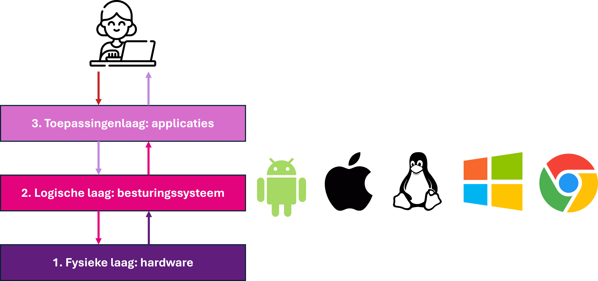

De taakbeheer van Microsoft Windows geeft een overzicht van de actieve programma's.
Stel je voor: je ontgrendelt je telefoon met je duimafdruk. Even later verschijnt er een melding dat er een update klaarstaat. Maar… is dat iets wat een app regelt? Of zit dat anders in elkaar?
Om dat te begrijpen, kijken we naar de logische laag van je apparaat. Een digitaal apparaat werkt dankzij een combinatie van hardware en software. De software die de hardware aanstuurt noemen we systeemsoftware. Deze systeemsoftware vormt de logische laag in het drielagenmodel, tussen de fysieke laag (hardware) en de toepassingenlaag (apps).

De logische laag in het drielagenmodel.
De logische laag bestaat uit verschillende onderdelen van de systeemsoftware die samen zorgen dat je apparaat goed werkt. Deze onderdelen zijn:
Samen zorgen deze onderdelen ervoor dat apps soepel met de hardware samenwerken. De logische laag is dus de spil tussen wat jij doet en wat het apparaat uitvoert.
Het belangrijkste onderdeel van de systeemsoftware is het besturingssysteem, zoals Windows, macOS, Android of iOS. Dit systeem voert basistaken uit zoals:
Welk van de onderstaande onderdelen hoort niet bij de systeemsoftware in de logische laag?
Antwoord Opdracht 1: B. De processor is een onderdeel van de hardware en hoort bij de fysieke laag, niet bij de logische laag of de systeemsoftware.
Koppel elk begrip aan de juiste beschrijving.
| Beschrijving | Begrippen |
|---|---|
| 1. Stelt je in staat het systeem in te stellen of te controleren. | A. Systeemdiensten |
| 2. Zorgt ervoor dat apps en hardware goed met elkaar kunnen samenwerken. | B. Driver |
| 3. Draaien op de achtergrond en zorgen dat bijvoorbeeld wifi blijft werken. | C. Logische laag |
| 4. Maakt communicatie mogelijk tussen het besturingssysteem en aangesloten apparaten. | D. Beheertools |
Het besturingssysteem is het centrale onderdeel van de logische laag. Het zorgt dat je apparaat stabiel, veilig en efficiënt werkt. Dit is het hart van de systeemsoftware in de logische laag. Zonder besturingssysteem kun je geen apps gebruiken, geen bestanden openen en geen verbinding maken met internet. Het besturingssysteem zorgt ervoor dat alles soepel verloopt: het stuurt de hardware aan, beheert het geheugen, regelt beveiliging en verdeelt de taken tussen apps.
Voorbeelden van besturingssystemen:

Kruis aan of de onderstaande beweringen waar of niet waar zijn.
| Bewerking | Waar | Niet waar |
|---|---|---|
| Zonder besturingssysteem kun je geen apps gebruiken. | ||
| Android en iOS zijn besturingssystemen voor desktops. | ||
| Het besturingssysteem beheert het werkgeheugen. | ||
| Windows en macOS zijn voorbeelden van apps die je kunt downloaden. |
Het besturingssysteem heeft veel verantwoordelijkheden. Het zorgt ervoor dat je apparaat stabiel, veilig en efficiënt werkt.
Voorbeeld. Een van de taken van het besturingssysteem is taakbeheer. Dit houdt in dat de rekenkracht van de processor verdeeld wordt over meerdere apps en processen. Zo kun je tegelijk een video kijken, muziek luisteren en bestanden downloaden, zonder dat je apparaat vastloopt. In Windows kun je via het programma Taakbeheer zien welke processen actief zijn, hoeveel geheugen of rekenkracht ze gebruiken, en eventueel apps afsluiten die niet goed werken.
De taakbeheer van Microsoft Windows geeft een overzicht van de actieve programma's.
Hieronder zie je de belangrijkste taken van het besturingssysteem:
Welke van de onderstaande is geen taak van het besturingssysteem?
Antwoord Opdracht 4: C
Situatie: Je opent een foto vanuit je bestandenmap, bewerkt deze in een fotobewerkingsapp en slaat hem daarna op onder een nieuwe naam.
Opdracht: Koppel de juiste taak van het besturingssysteem aan de bijbehorende actie. Kies uit:
| Actie | Taak van het besturingssysteem |
|---|---|
| 1. De aangepaste afbeelding wordt opnieuw opgeslagen | ... |
| 2. De app draait tegelijk met Spotify op de achtergrond | ... |
| 3. Het systeem blokkeert een onbekende app die toegang wil tot je bestanden | ... |
| 4. Het werkgeheugen wordt verdeeld over beide apps | ... |
| 5. De foto wordt geopend in de app | ... |
In het drielagenmodel vormt de logische laag de brug tussen de fysieke laag (de hardware) en de toepassingenlaag (de apps die jij gebruikt). Dankzij deze laag kunnen apps veilig en efficiënt gebruikmaken van de hardware, zonder dat ze hoeven te weten hoe elk onderdeel precies werkt.
Om die brugfunctie goed te vervullen, maakt de logische laag gebruik van drie belangrijke hulpmiddelen (de eerste twee heb je al in hoofdstuk 2 leren kennen):
Samen zorgen deze drie onderdelen ervoor dat apps eenvoudig met de hardware kunnen werken, zonder ingewikkelde code. De logische laag vangt verzoeken op via de API’s, gebruikt drivers om met de hardware te praten, en voert taken uit via zijn diensten.
Je hebt gezien dat het besturingssysteem allerlei belangrijke taken uitvoert, zoals geheugenbeheer, bestandsbeheer en beveiliging. Maar hoe maken apps daar gebruik van? Via de logische laag worden deze functies als diensten aangeboden aan andere software, zoals apps. Deze diensten zorgen ervoor dat apps op een veilige en makkelijke manier kunnen samenwerken met de hardware.
Hieronder zie je welke belangrijke diensten de logische laag levert, en wat ze doen:
| Dienst | Wat houdt dat in? |
|---|---|
| Verwerking van opdrachten | Stuurt de processor aan om opdrachten van apps uit te voeren. |
| Toegang tot opslag | Regelt dat bestanden worden opgeslagen of geopend op de harde schijf of SSD. |
| Geheugenbeheer | Deelt het RAM-geheugen toe aan actieve apps en processen. |
| Invoer verwerken | Verwerkt toetsen, muisbewegingen of aanrakingen van het scherm en stuurt die door naar de juiste app. |
| Uitvoer regelen | Zorgt dat apps iets kunnen laten zien of horen via scherm en luidsprekers. |
| Beveiliging en toegang | Bepaalt welke apps toegang hebben tot onderdelen zoals camera, bestanden of netwerk. |
| Netwerkverbinding | Levert netwerkdiensten waarmee apps verbinding maken met internet of andere apparaten. |
Zonder deze diensten zouden apps zelf moeten regelen hoe ze gegevens opslaan, invoer verwerken of verbinding maken met het internet — en dat is onpraktisch en onveilig. Dankzij de logische laag kunnen apps veilig, efficiënt en zonder technische details met de hardware samenwerken.
Wat is de belangrijkste taak van het besturingssysteem in de logische laag?
Koppel de dienst van de logische laag aan het juiste voorbeeld:
| Dienst van de logische laag | Voorbeeld |
|---|---|
| A. Geheugenbeheer | 1. Een tik op het scherm wordt doorgestuurd naar een app |
| B. Beveiliging en toegang | 2. Een document wordt opgeslagen op de SSD |
| C. Invoer verwerken | 3. Twee apps gebruiken tegelijk het werkgeheugen zonder elkaar te storen |
| D. Toegang tot opslag | 4. Een app krijgt geen toestemming om de camera te gebruiken |
Welke taken voert een besturingssysteem uit om apps te laten samenwerken met de hardware? (Meerdere antwoorden mogelijk)
Stel: je opent op je smartphone een bijlage uit een e-mail, bijvoorbeeld een PDF-bestand. Koppel elk onderdeel van de logische laag aan wat het op dat moment doet.
| Onderdeel van de logische laag | Wat gebeurt er? |
|---|---|
| A. Besturingssysteem | 1. Zorgt dat het opslagapparaat correct wordt aangestuurd bij het opslaan van het bestand. |
| B. Systeemdienst | 2. Zorgt dat de apps samenwerken met de hardware en regelt toegang tot de opslaglocatie. |
| C. Driver | 3. Houdt bij welke apps tegelijk actief zijn, zoals je mail-app en PDF-viewer. |
| D. Geheugenbeheer | 4. Downloadt het bestand via wifi of mobiel internet. |
| E. Taakbeheer | 5. Verdeelt het RAM-gebruik zodat de PDF-app goed kan draaien. |

Een besturingssysteem is specifiek ontworpen voor een bepaald type apparaat. Voor smartphones en tablets gebruik je bijvoorbeeld Android, of iOS op Apple-apparaten. Op Apple-laptops en desktops draait macOS, en op Chromebooks ChromeOS. Andere laptops en desktopcomputers gebruiken meestal Windows of Linux. Omdat toepassingen communiceren met het besturingssysteem, zijn apps afgestemd op een specifiek besturingssysteem. Een app die voor iOS is ontwikkeld, kan daarom niet zonder aanpassingen worden geïnstalleerd op Android.
De tabel hieronder geeft een overzicht van de grootste verschillen tussen de vier besturingssystemen voor computers en laptops.
| Kenmerk | Windows |
macOS |
Linux |
ChromeOS |
|---|---|---|---|---|
| Prijs: Wat kost het besturingssysteem en/of apparaat? | Besturingssysteem is betaald (vaak meegeleverd met de pc). Grote keuze in de samenstelling van een apparaat, en dus ook de prijs. | Duurder. Alleen Apple-hardware mogelijk. | Gratis en open source. | Chromebooks zijn zeer goedkoop. |
| Vrijheid: Hoeveel controle heb je over het systeem? | Beperkt: Microsoft bepaalt veel. | Beperkt: Apple sluit systeem af. | Volledige controle mogelijk. | Beperkt tot Google’s keuzes. |
| Gemak voor beginners: Hoe makkelijk is het om ermee te werken zonder veel technische kennis? | Groot gemak: herkenbaar voor velen. | Groot gemak: intuïtieve vormgeving. | Lager gemak: hangt af van de versie. | Zeer hoog gemak: alles draait om eenvoud. |
| Software-aanbod: Welke programma’s kun je gebruiken? | Zeer breed: veel games en kantoorsoftware | Breed: sterke creatieve software, minder games | Afhankelijk van distributie, veel open source | Alleen webapps en Android-apps, geen installeerbare programma's mogelijk. |
| Geschikt voor: Voor welk type gebruiker is dit OS het meest geschikt? | Algemeen gebruik, bedrijven, gamers | Creatieven, Apple-gebruikers | Technische gebruikers, programmeurs | Scholieren, internetgebruikers, lichte taken |
Zoek uit welk besturingsysteem jouw telefoon of laptop gebruikt, en welke versie van het besturingssysteem.
Tips:
Vul de onderstaande tabel in. Zoek daarvoor op internet voor informatie over iOS en Android op het internet of in het lesmateriaal.
| Kenmerk | Toelichting | iOS (Apple) |
Android (Google / anderen) |
|---|---|---|---|
| Gebruiksgemak | Hoe makkelijk is het systeem voor beginners? | ... | ... |
| Aanpasbaarheid | Kun je instellingen, apps en uiterlijk naar wens aanpassen? | Beperkt; Apple bepaalt veel | ... |
| App-aanbod | Hoeveel apps zijn er beschikbaar in de app store? | ... | Groot aanbod, meer variatie, wisselende kwaliteit |
| Beveiliging | Hoe goed beschermt het OS je gegevens en privacy? | ... | ... |
| Toestelkeuze | Op hoeveel soorten toestellen is dit OS beschikbaar? | Alleen op iPhones, iPads | ... |
Antwoord opdracht 12:
| Kenmerk | Toelichting | iOS (Apple) | Android (Google / anderen) |
|---|---|---|---|
| Gebruiksgemak | Hoe makkelijk is het systeem voor beginners? | Erg gebruiksvriendelijk en intuïtief | Ook makkelijk, maar verschilt per merk |
| Aanpasbaarheid | Kun je instellingen, apps en uiterlijk naar wens aanpassen? | Beperkt; Apple bepaalt veel | Zeer aanpasbaar; veel instellingen en thema’s |
| App-aanbod | Hoeveel apps zijn er beschikbaar in de app store? | Zeer groot, streng gecontroleerd | Groot aanbod, meer variatie, wisselende kwaliteit |
| Beveiliging | Hoe goed beschermt het OS je gegevens en privacy? | Goede privacy, streng beleid | Redelijk goed, maar verschilt per fabrikant en instelling |
| Toestelkeuze | Op hoeveel soorten toestellen is dit OS beschikbaar? | Alleen op iPhones, iPads | Op meerdere modellen van verschillende merken |